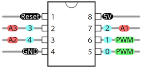
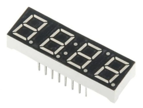
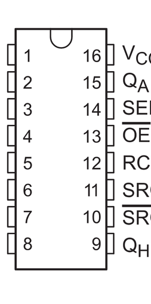
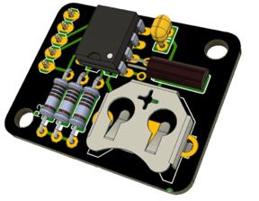
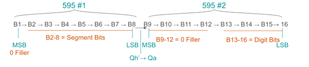
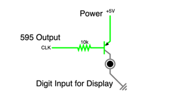

2024 · Real-Time Embedded Display
Real Time Clock Prototype
Built a compact clock prototype using an ATtiny85, DS1307 RTC, two 74HC595 shift registers, and a 4-digit seven-segment display.

Video Demonstration
Working demonstration
The project video shows the physical build, behaviour, and final result.
 ▶ Watch on YouTube
▶ Watch on YouTube
Project Overview
Display live RTC time with a small microcontroller and limited pins.
The design had to fit live timekeeping and display multiplexing into the limited pin count of an ATtiny85, using shift registers to expand the available outputs.
What I built
- RTC time retrieval over I2C
- BCD-to-decimal conversion functions
- Dual 74HC595 output expansion
- 4-digit display refresh loop
- Flashing colon from RTC square-wave output
Technical Skills
Skills demonstrated
ATtiny85 development
Applied directly in the design, build, debugging, or final integration of the project.
I2C RTC control
Applied directly in the design, build, debugging, or final integration of the project.
Shift-register display driving
Applied directly in the design, build, debugging, or final integration of the project.
Binary-coded decimal
Applied directly in the design, build, debugging, or final integration of the project.
Pin-count optimization
Applied directly in the design, build, debugging, or final integration of the project.
Build Story
Compact RTC display hardware
Shift-register output
The image to the right shows the 4-digit seven-segment display used to present live hours and minutes.

Display pinout
The image to the right shows the 74HC595 shift-register pinout used to expand the number of display-control outputs available to the ATtiny85.

RTC register map
The image to the right shows the DS1307 RTC breakout board, which holds the RTC chip, crystal, backup battery, and supporting components.

RTC breakout
The image to the right shows how the digit and segment values are packed across two 74HC595 shift registers so the display can be controlled with fewer pins.

Digit drive stage
The image to the right shows the PNP transistor digit-drive stage, which inverts and controls the display digit outputs.
